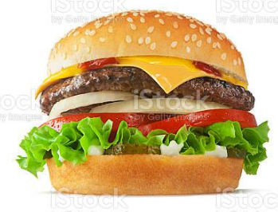

CheeseBurgeer

Description
The cheeseburger is a very popular meal served all around the globe.
It is very easy to make!
Ingredients
- BUrger's bread
- beef steak
- tomato and salad
- cheese
- garlic
- salt
- Mayo
Steps
- Start by cooking the beef on the stove, try to give the steak a circular form
- When the meat is ready the only thing left to do is to assemble the burger
- Bottom bread
- Then a layer of Mayo
- Then salad and tomatoes
- Then meat
- Then hot melting cheese
- Then another salad then top bread and it's readyyy!